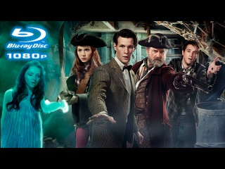
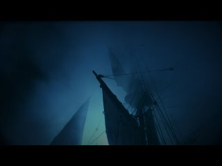
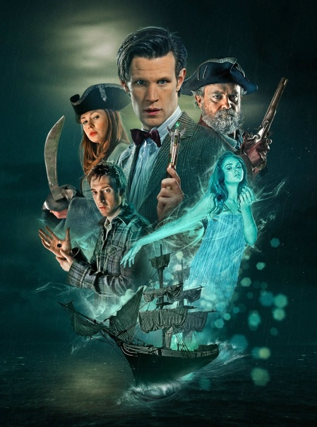

Весь 6-й сезон (13 серий)

 | Весь 6-й сезон (13 серий) |
The Curse of the Black Spot
Дата выхода: 7 мая 2011
Формат: 45-минутный эпизод
| Варианты озвучек: | * Разные: смотрите по инструкции |
|---|---|
| Скачивание и просмотр: |
ТАРДИС попадает на борт пиратского корабля XVII века, на команду которого нападает странное, но загадочное и прекрасное морское создание. Доктор предлагает свою помощь, но пираты хранят множество суеверий о появлении сирены. Доктору нужно добиться доверия капитана Эвери, чтобы раскрыть тайну страха пиратов — и действовать нужно быстро, ведь под заклятие сирены уже попал один из друзей Доктора…
